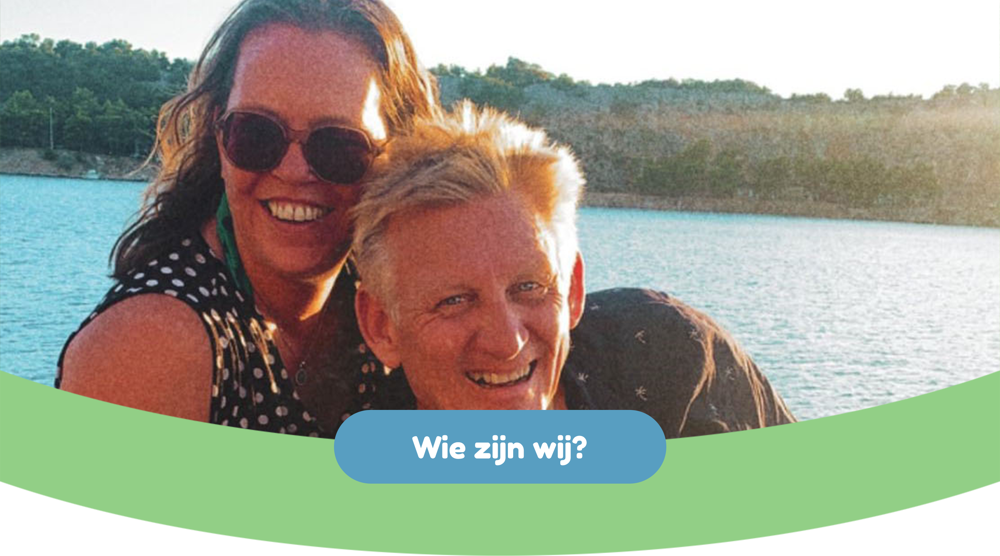

 Wij zijn Gebke en Michiel, samen vormen wij GeMi, een opvang voor
kinderen via PGB. Beiden hebben wij veel ervaring in de verstandelijk
gehandicaptenzorg en in de begeleiding en training van (jonge)
kinderen met autisme en/of een verstandelijke beperking. We hebben
elkaar ontmoet in 2009 bij een stichting in Amsterdam, we werkten
beiden als Persoonlijk Begeleider op een woongroep voor volwassen
cliënten met moeilijk verstaanbaar gedrag. In dit geval betekende dat
agressie en ongewenst gedrag. Ons werk was breed maar de belangrijkste
taak was het lezen van gedrag en een manier zoeken om het leven van de
cliënt zo aangenaam mogelijk te maken/ houden. Naast ons werk op de
groep hebben we ons beiden gespecialiseerd, Michiel heeft de opleiding
post-HBO autisme gevolgd en Gebke is opgeleid als trainer fysieke
agressie hantering.
Sinds 2011 zijn we samen en vormen met onze kinderen een samengesteld
gezin. In 2017 besloot Gebke dat ze zich op iets anders wilde richten.
Na ruim 14 jaar bij de stichting werd het tijd een nieuwe uitdaging te
zoeken. Via een oud-collega kwam ze terecht bij een behandelcentrum
voor jonge kinderen met autisme, in Purmerend. Daar maakte zij kennis
met ABA, een methode om jonge kinderen met (onder andere) autisme
nieuwe vaardigheden aan te leren. Ze werkte als trainer en
groepsbegeleider en heeft er 4 jaar met heel veel plezier gewerkt.
Wij zijn Gebke en Michiel, samen vormen wij GeMi, een opvang voor
kinderen via PGB. Beiden hebben wij veel ervaring in de verstandelijk
gehandicaptenzorg en in de begeleiding en training van (jonge)
kinderen met autisme en/of een verstandelijke beperking. We hebben
elkaar ontmoet in 2009 bij een stichting in Amsterdam, we werkten
beiden als Persoonlijk Begeleider op een woongroep voor volwassen
cliënten met moeilijk verstaanbaar gedrag. In dit geval betekende dat
agressie en ongewenst gedrag. Ons werk was breed maar de belangrijkste
taak was het lezen van gedrag en een manier zoeken om het leven van de
cliënt zo aangenaam mogelijk te maken/ houden. Naast ons werk op de
groep hebben we ons beiden gespecialiseerd, Michiel heeft de opleiding
post-HBO autisme gevolgd en Gebke is opgeleid als trainer fysieke
agressie hantering.
Sinds 2011 zijn we samen en vormen met onze kinderen een samengesteld
gezin. In 2017 besloot Gebke dat ze zich op iets anders wilde richten.
Na ruim 14 jaar bij de stichting werd het tijd een nieuwe uitdaging te
zoeken. Via een oud-collega kwam ze terecht bij een behandelcentrum
voor jonge kinderen met autisme, in Purmerend. Daar maakte zij kennis
met ABA, een methode om jonge kinderen met (onder andere) autisme
nieuwe vaardigheden aan te leren. Ze werkte als trainer en
groepsbegeleider en heeft er 4 jaar met heel veel plezier gewerkt.
In 2019 besloot ook Michiel, na 12 jaar, de stichting te verlaten. Hij vond een baan op een dagbesteding voor jonge kinderen met een verstandelijke beperking in Purmerend. Helaas ging deze een half jaar later failliet. De werkplek van Gebke bood Michiel toen een baan aan. Zo werden wij weer collega’s, al werkten we wel op andere groepen. Met veel plezier hebben we hier gewerkt, ontzettend veel geleerd en genoten van het werken met kinderen. We hebben beiden een opleiding ABA gevolgd en veel ervaring met deze methode opgedaan. Op deze plek kwamen wij er achter hoe ontzettend pittig het kan zijn voor ouders van deze kinderen. Elk kind is uniek en heeft zijn/ haar eigen uitdagingen. Voor ouders betekent dit vaak continue zorg en aandacht met weinig ruimte voor zichzelf en elkaar.
In 2019 werden we gevraagd of we 1x in de week en om het weekend een kind wilden opvangen thuis, via pgb. Na overleg met ons gezin besloten we ervoor te gaan, een mooie manier om een moeder te ondersteunen en een kind in ons gezin een plekje te bieden. Het was een meisje van toen 8 jaar, inmiddels is ze 12 en komt nog steeds elke week bij ons. Bijna vanzelf breidde dit zich uit naar meerdere kinderen en meerdere dagen per week. Op 1 februari 2022 besloot Gebke te stoppen op haar werkplek en fulltime kinderen thuis op te vangen. Dit liep goed en breidde ook weer uit, zo zeer dat we besloten hebben dit samen te gaan doen. Vanaf 1 maart 2023 doen we dit samen, full time.
Maar we zijn niet alleen!
Wij vangen de kinderen bij ons thuis op, in Purmerend. Wij wonen in een ruime eengezinswoning, samen met ons gezin. De kinderen van Gebke (pubers) wonen bij ons en de kinderen van Michiel komen heel regelmatig langs, zij wonen al op zichzelf. Alle kinderen vinden het leuk dat we dit werk doen en hebben op hun eigen manier vaak ook een band met de kinderen die hier komen. Ook hebben wij twee huisdieren: Junior de kat en Yuki de hond. Junior leeft zijn eigen leven en trekt zich weinig aan van wie hier allemaal rondloopt. Yuki is gek op kinderen en ziet elk kind dat hier komt direct als roedel-lid. Ze laat de kinderen binnen altijd goed met rust maar buiten vindt ze het erg leuk om samen te rennen, ballen op te halen en te spelen. Wanneer een kind bang is voor dieren houden we daar uiteraard rekening mee.
Heeft u nog vragen?
Stel ze gerust!